Art Gallery
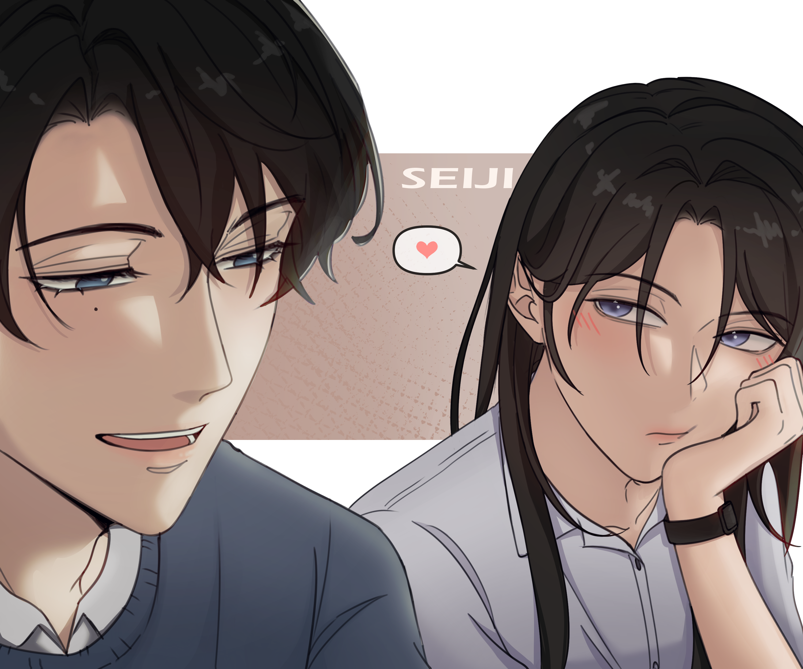
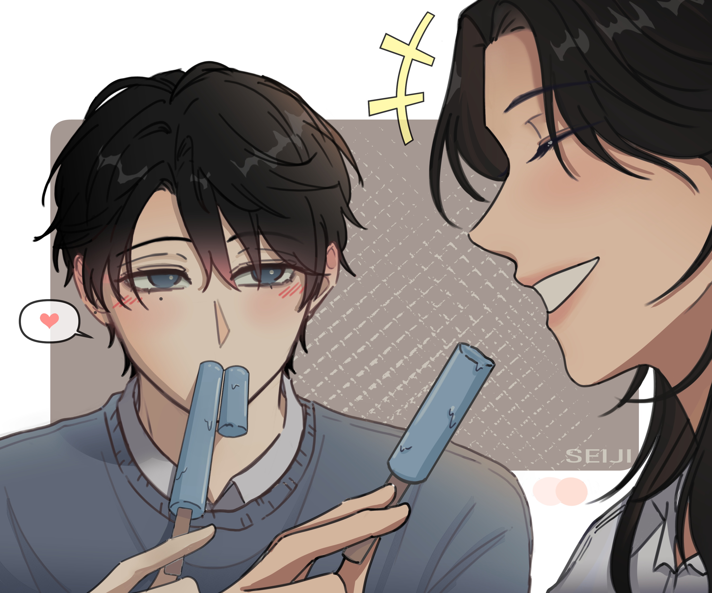

 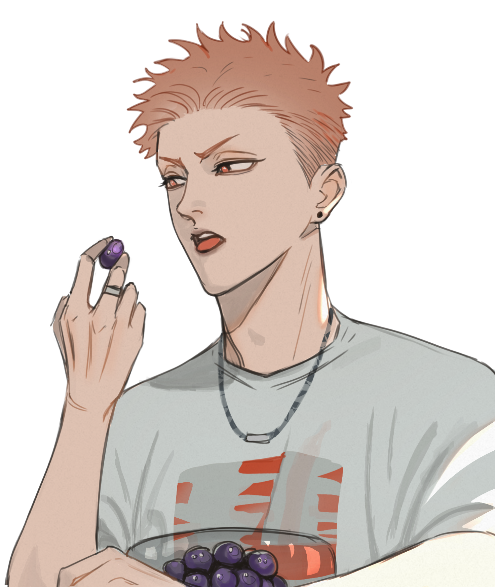
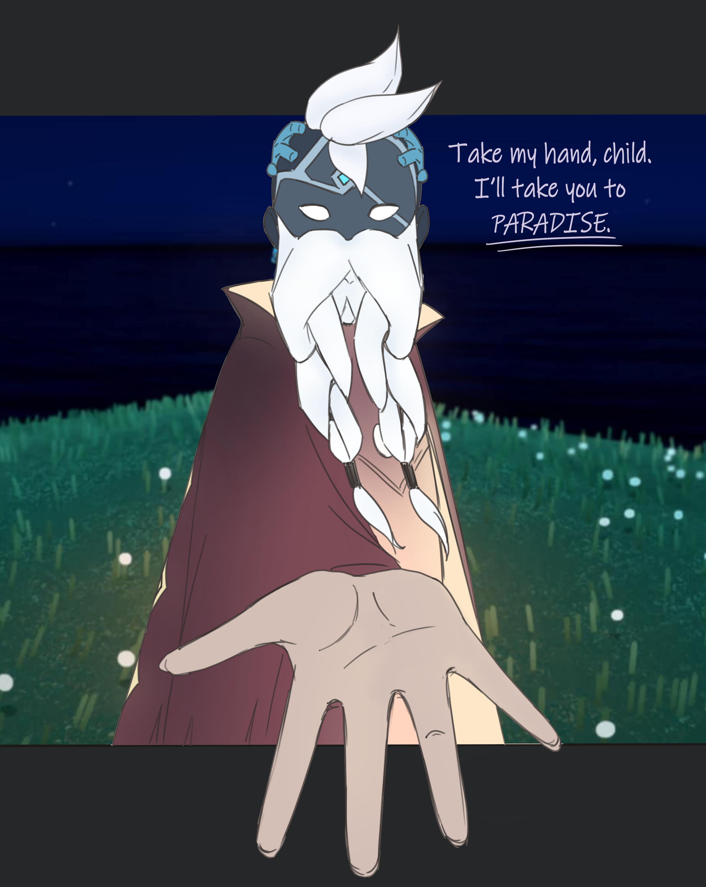
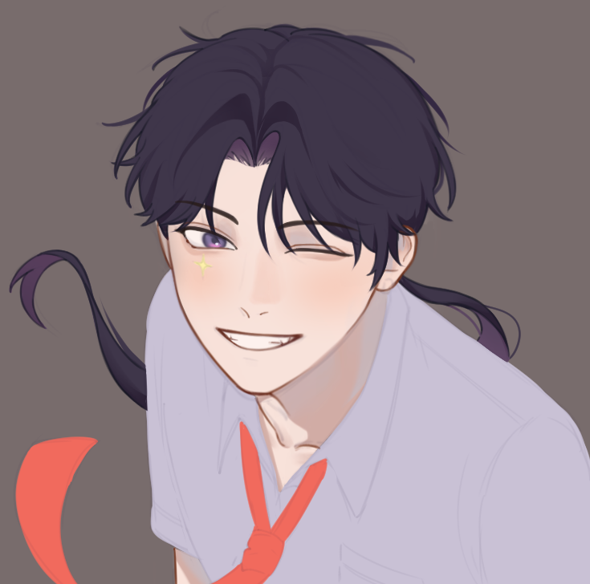
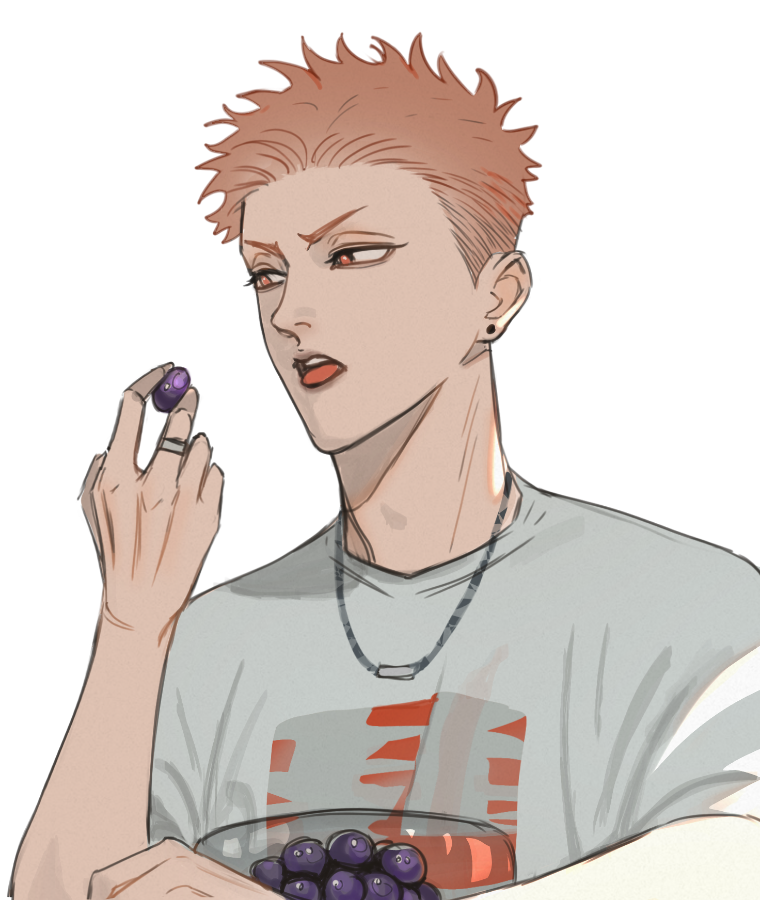
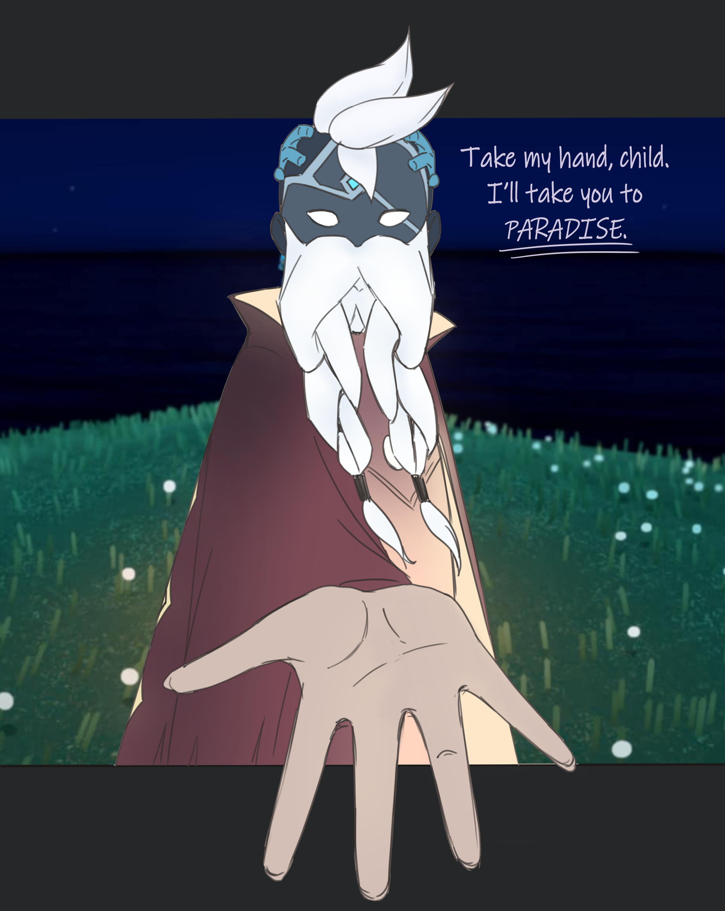
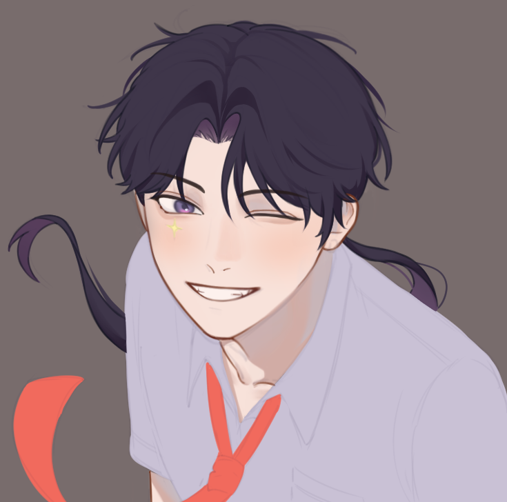
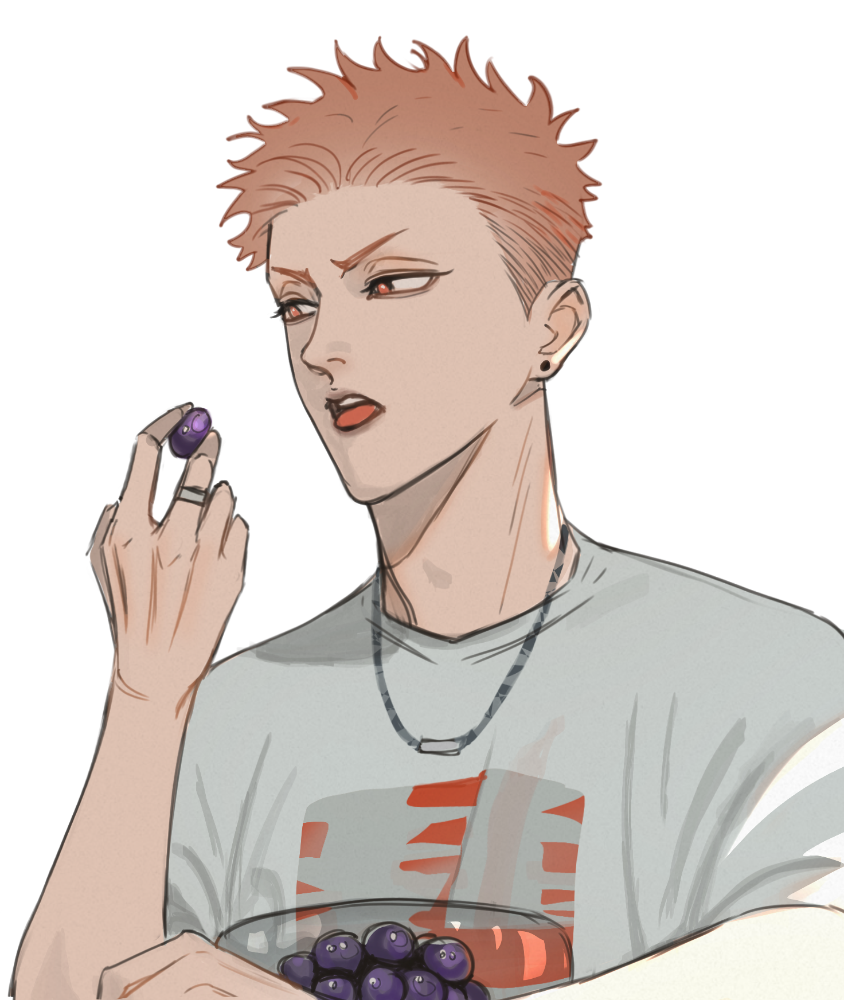
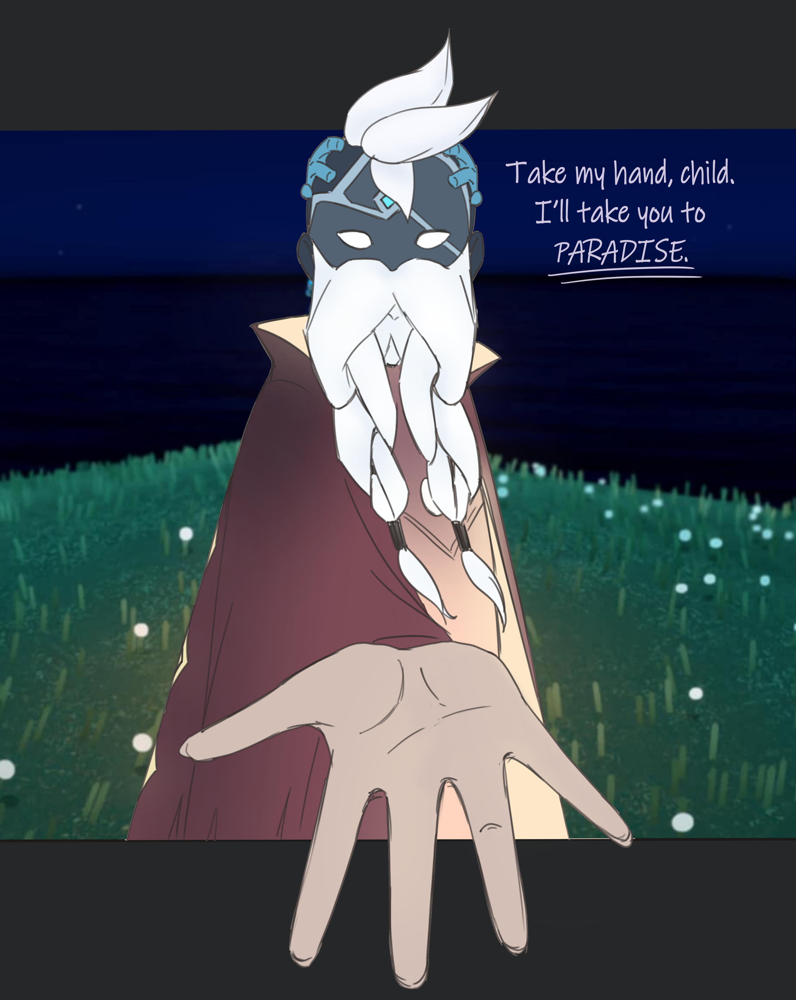
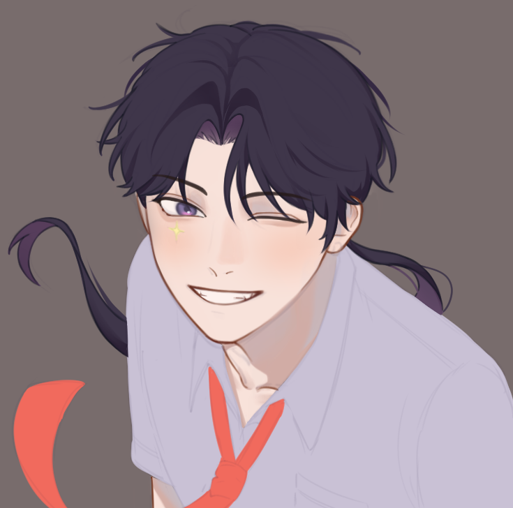
Digital Artist?
I'm a passionate digital artist who loves bringing stories to life through my illustrations. I enjoy exploring color, emotion, and detail in every piece I create. My art is a reflection of how I see and feel the world like; softie boys, expressive girlies, full of Emotion Tops and Powerful Sassy Bottom. And also, I have Second Male Leads Syndrome:3
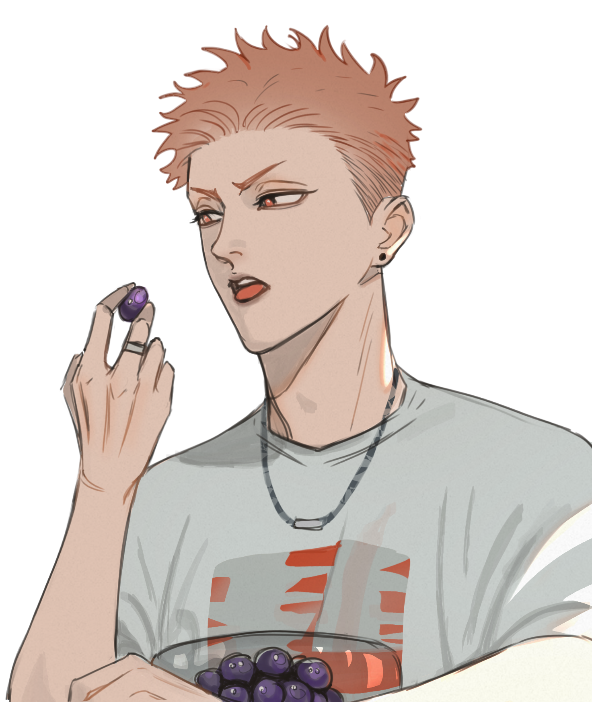
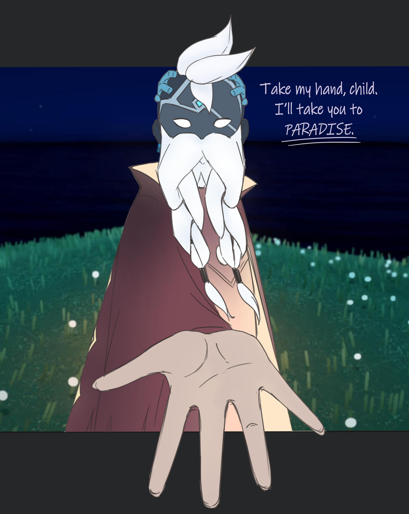
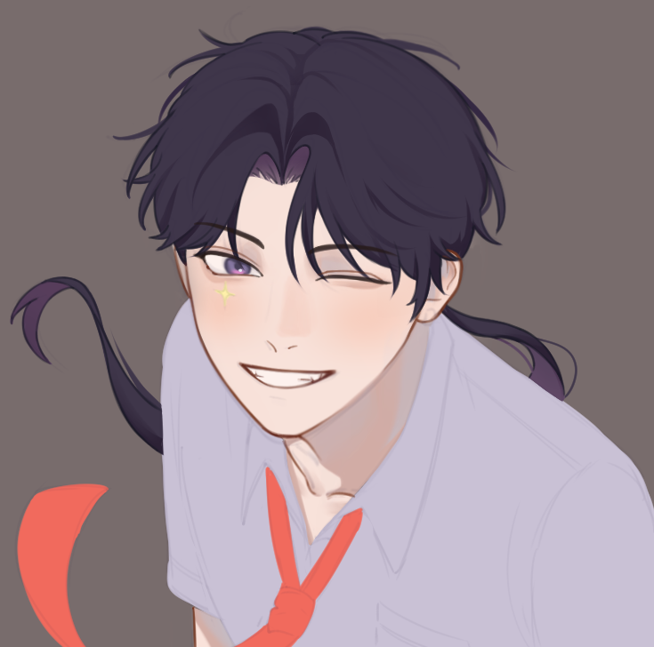
Drawing, Reading, Gaming, Spreading LOVE & HATE（〃｀ 3′〃）
Interested in working together or have a question? Reach out anytime!
(+63) 968-
crystaljaneborines@gmail.com